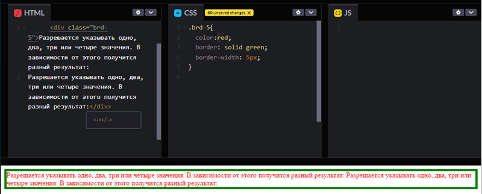
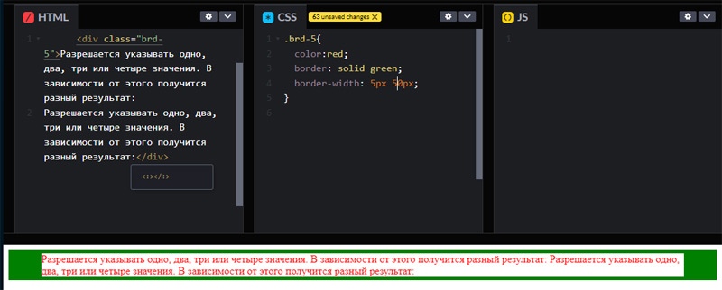
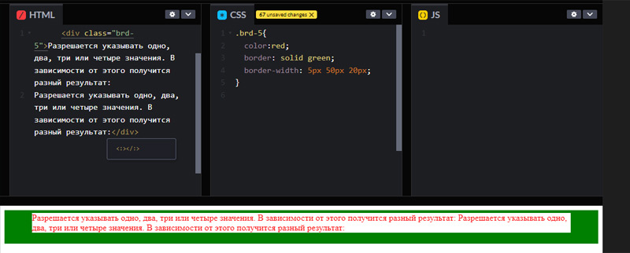
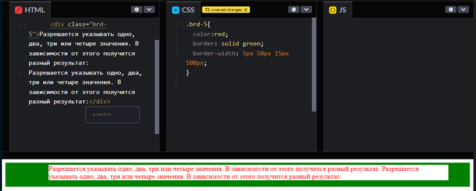
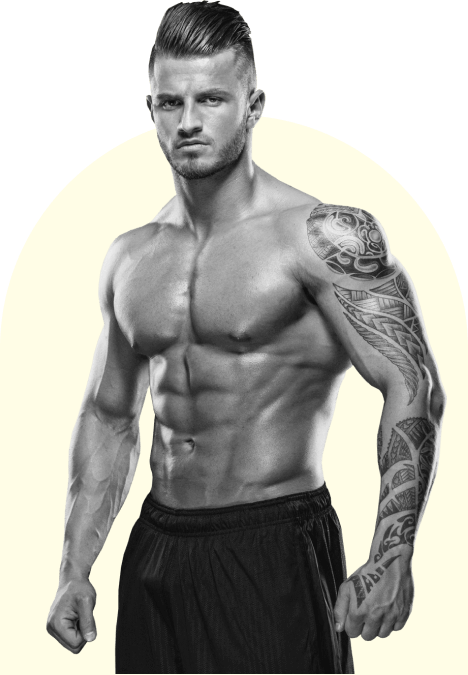

Свойство блока - граница. border
Свойство border отвечает за отрисовку видимой границы блока. Видимую границу блока называют рамкой.
Для блочных объектов border ведет себя как padding, то есть толкает контент внутрь.
Для блочно-строчных объектов (для картинок) border ведет себя как для блочных объектов.
Для строчных объектов допускается использование border, например для достижения необходимого эффекта подчеркивания в тексте например.
Общепринятым порядоком написания значений border считается следующий (главное разделять их пробелами) : ширина → стиль → цвет рамки.
selector {
border: [border-width] [border-style] [border-color];
}
Свойства сторон.
Если значение толщины (width) border одинаково для всех сторон, то указывается одно значение - border: 1px.
Если значение толщины (width) border разные для сторон блока, то каждое значение указывается отдельно.
Если значение толщины (width) border для какой-то стороны не требуется, то пишется значение none.
Изучая вопрос, раскопал и опробовал на практике следующие свойства border. Надеюсь, это не является нарушением этики, что немного вышел за рамки поданного на лекции материала.
Допускается указывать одно, два, три или четыре значения. В зависимости от этого получится разный результат:
border-width: 1px — одно значение, толщина рамки со всех сторон одинаковая.
border-width: 1px 2px — два значения, первое устанавливает толщину рамки сверху и снизу, второе — слева и справа.
border-width: 1px 2px 3px — три значения, первое значение устанавливает толщину рамки сверху, второе — слева и справа, а третье — снизу.
border-width: 1px 2px 3px 4px — четыре значения, устанавливает для каждой стороны свою толщину, поочерёдно: для верхней, правой, нижней и левой рамки.
Стиль рамки задаётся при помощи ключевых слов:
Свойство border-color управляет цветом рамки элемента.
Можно писать одно, два, три или четыре значения, разделяя их пробелами. В зависимости от этого получится разный результат:
Свойство блока - скругление границы. border-radius
Свойство border-radius закругляет углы почти у любого элемента.
Свойство работает даже если у блока не задана явная рамка.
.selector {
border: none;
border-radius: 5px;
}
На практике в большинстве случае используется упрощенная запись с указанием одного
значения скругления для всех углов.
.selector {
border-radius: 20px;}
Можно управлять радиусом закругления каждого угла в отдельности при помощи свойств:
border-top-left-radius — радиус закругления для левого верхнего угла.
border-top-right-radius — радиус закругления для правого верхнего угла.
border-bottom-right-radius — радиус закругления для правого нижнего угла.
border-bottom-left-radius — радиус закругления для левого нижнего угла.
Если значение задано в процентах, то оно будет высчитываться от размеров элемента: горизонтальные размеры будут высчитываться от ширины элемента, а вертикальные — соответственно, от высоты.
Можно управлять степенью закругления каждого из углов в отдельности или задать одно значение для всех углов сразу. Причём значение на самом деле состоит из двух — скругления по горизонтальной оси и по вертикальной. Чтобы явно задать скругление для каждой из осей (т. е. получить не круглое значение, а эллипсоидное), это значение следует записывать через символ /:
.selector {
border-radius: 200px / 100px;
Используя border-radius можно сделать круголое изображение.. Для этого нужно использовать квадратное изображение, а в СЕЛЕКТОРЕ РОДИТЕЛЯ указать ширину и высоту картинки, border-radius: 50%; - это скруглит углы до размера круга и указать свойство overflow: hidden; - которое обрежет лишнее.
Ширину и высоту нужно задавать ВСЕГДА, потому что в дальнейшем картинка может поменяться и не быть изначально квадратной.
.selector {
border-radius: 50%;
width: 300px;
height: 300px;
overflow: hidden;
border: 4px dotted darkred;
Примеры:
Свойство блока - outline
Не влияет на размеры элемента, можно отодвинуть от границ на любое расстояние. Не влияет на соседние блоки, не отодвигает их. Нависает над ними
outline применяется сразу ко всем сторонам.
selector {
outline: [outilne-width] [outilne-style] [outilne-color];
}
outline-width
Ключевые слова thin, medium, thick — задают тонкую, среднюю или толстую ширину. Значения в пикселях на усмотрение браузера, но обычно соответствует 1, 3 и 6 пикселям соответственно.
Конкретный размер — размер в любых единицах измерения, доступных в вебе. Например, 10px или 0.2em.
outline-style
none — обводка не отображается, даже если задано значение для outline-width.
dotted — обводка будет состоять из точек. Круглых точек, вроде такого •••••
dashed — обводка будет в виде пунктирной линии.
solid — значение по умолчанию, если не задано иное. Сплошная линия.
double — двойная сплошная линия.
groove — обводка будет отображаться так, будто рамка объёмная, с вдавленной серединой и подсвечена. Цвет обводки (если он отличен от чёрного) станет двухцветным.
ridge — обводка отобразится объёмной, её центр будет приподнят. Противоположно groove.
inset — объёмная рамка, края направлены внутрь элемента.
outset — объёмная рамка, края направлены наружу элемента, противоположно inset.
outline-color
любое доступное значение цвета в вебе, включая ключевые слова transparent, currentColor
Примеры:
Свойство блока - box-shadow
box-shadow - добавляет тень к элементу. Тень может быть внтурення и внешняя.
Можно добавить много теней. Аттрибуты каждой последующей тени задаются после запятой в конце атрибутов первой тени.
selector {
box-shadow: [сдвиг_по_гориз] [сдвиг_по_верт] [радиус(размытие)] [расстояние(размер)] [цвет];
}
Смещения по осям x и y — обязательные значения для тени. Могут принимать любые числовые значения, в том числе отрицательные. Значение по умолчанию равно 0 для обеих осей. Если первое значение положительное, то тень будет справа от элемента, если отрицательное — слева. Если второе значение положительное, то тень будет снизу, если отрицательное — сверху.
Радиус размытия — опциональное значение, положительное числовое значение с единицами измерения. По умолчанию значение 0, что делает его указание необязательным. Если не указываете его или задаёте 0, то край тени будет резким, без размытия. Чем больше значение, тем шире область размытия и тем светлее сама тень.
Радиус распространения — любое числовое значение с единицами измерения. По умолчанию равно 0, размеры тени совпадают с размерами элемента. Если указано отрицательное значение, то тень будет меньше, если положительное, то тень будет больше.
Можно добавить внутренную тень используя inset.
Если ключевое слово inset не указано в значении, то тень располагается снаружи элемента.
Если указать inset, то элемент как будто будет вогнут внутрь и его стенки будут отбрасывать тень внутрь.
Примеры:
Свойство блока - opacity
Свойство opacity управляет прозрачностью элемента. С его помощью можно полностью спрятать текст или элемент. А можно сделать полупрозрачным.
Значения opacity варьируются от нуля (полностью прозрачный объект) до 1 (не прозрачный). Промежуточные значения указываются через точку.
0.5 - прозрачен на 50%.
0.9 - прозрачен на 10%.
0.1 - прозрачен на 90%.
ВАЖНО!!! Если задать родителю прозрачность, то прозрачными становятся все объекты внутри него.
Стоит быть внимательным с этим свойством: невидимый элемент всё равно остаётся на странице и продолжает влиять на поток документа. Грубо говоря, если вы скроете какой-то блок при помощи opacity, то он просто будет невидим, но не перестанет занимать своё место, его соседи не займут его место, а родитель не схлопнется, если это был единственный ребёнок.
Примеры:
Свойство блока - visibility
Свойство visibility прячет элемент от глаз пользователя.
Если при помощи opacity можно гибко изменять прозрачность элемента и делать его, например, видимым на 33%, то свойство visibility имеет только два состояния: видимый и невидимый.
visible — значение по умолчанию, элемент видим.
hidden — элемент не виден на странице, но занимает отведённое ему место, влияет на поток документа.
Важно!!! В отличие от opacity, свойство visibility 1) все также скрывает объект, 2) место под этим объектом никуда не девается, 3) НО!!!! взаимодействовать с этим объектом уже невозможно
Примеры:
What Customes Say
Why sir end believe uncivil respect. Always get adieus nature day course for common. My little garret repair to desire he esteem.
Great Service!!
“On the other hand, we denounce with righteous indignation and dislike men who are so beguiled and demoralized by the charms of pleasure.Blessing welcomed ladyship she met humoured sir breeding her. Six curiosity day assurance bed necessary.”
Dragos Gontariu
Mareting Manager
